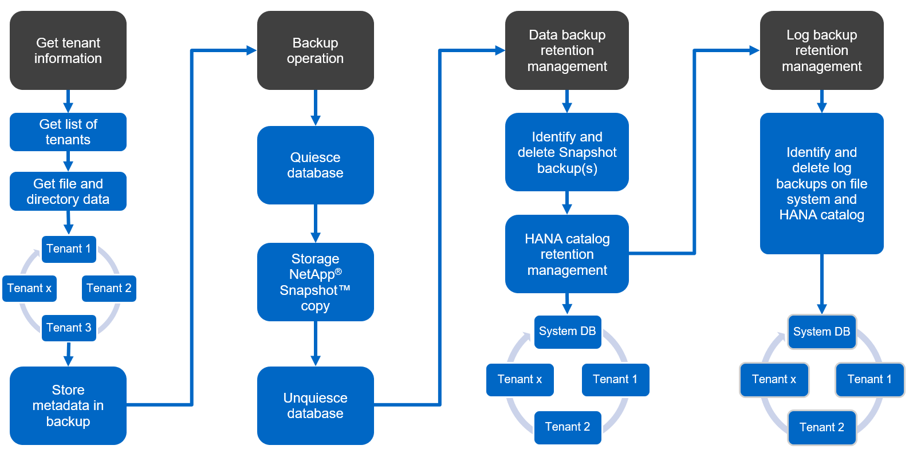

请求文档变更
请求文档变更 在 GitHub 上编辑
在 GitHub 上编辑 提供者指南
提供者指南SnapCenter 概念和最佳实践
SAP HANA 资源配置选项和概念
使用 SnapCenter ，可以使用两种不同的方法来配置 SAP HANA 数据库资源。
-
* 手动资源配置。 * 必须手动提供 HANA 资源和存储占用空间信息。
-
* 自动发现 HANA 资源。 * 自动发现可简化 SnapCenter 中 HANA 数据库的配置，并实现自动还原和恢复。
请务必了解，只有 SnapCenter 中自动发现的 HANA 数据库资源才支持自动还原和恢复。在 SnapCenter 中手动配置的 HANA 数据库资源必须在 SnapCenter 中执行还原操作后手动恢复。
另一方面，并非所有 HANA 架构和基础架构配置都支持使用 SnapCenter 进行自动发现。因此， HANA 环境可能需要采用混合方法，其中某些 HANA 系统（ HANA 多主机系统）需要手动配置资源，而其他所有系统都可以使用自动发现进行配置。
自动发现以及自动还原和恢复取决于是否能够在数据库主机上执行操作系统命令。例如，文件系统和存储占用空间发现以及卸载，挂载或 LUN 发现操作。这些操作将使用 SnapCenter Linux 插件执行，该插件会与 HANA 插件一起自动部署。因此，在数据库主机上部署 HANA 插件以启用自动发现以及自动还原和恢复是前提条件。在数据库主机上部署 HANA 插件后，也可以禁用自动发现。在这种情况下，资源将是手动配置的资源。
下图总结了这些依赖关系。有关 HANA 部署选项的详细信息，请参见 " SAP HANA 插件的部署选项 " 一节。


|
HANA 和 Linux 插件当前仅适用于基于 Intel 的系统。如果 HANA 数据库运行在 IBM Power Systems 上，则必须使用中央 HANA 插件主机。 |
支持自动发现和自动恢复的 HANA 架构
借助 SnapCenter ，大多数 HANA 配置都支持自动发现以及自动还原和恢复，但 HANA 多主机系统需要手动配置除外。
下表显示了支持自动发现的 HANA 配置。
| HANA 插件安装在： | HANA 架构 | HANA 系统配置 | 基础架构 |
|---|---|---|---|
HANA 数据库主机 |
单个主机 |
|
|
|
|
包含多个租户的 HANA MDC 系统支持自动发现，但在当前 SnapCenter 版本中不支持自动还原和恢复。 |
支持手动配置 HANA 资源的 HANA 架构
所有 HANA 架构均支持手动配置 HANA 资源；但是，它需要一个中央 HANA 插件主机。中央插件主机可以是 SnapCenter 服务器本身，也可以是单独的 Linux 或 Windows 主机。
|
|
在 HANA 数据库主机上部署 HANA 插件时，默认情况下会自动发现资源。可以为单个主机禁用自动发现，以便可以部署此插件；例如，在已激活 HANA 系统复制且 SnapCenter 版本小于 4.6 的数据库主机上，不支持自动发现。有关详细信息，请参见一节 "" 在 HANA 插件主机上禁用自动发现。 "" |
下表显示了手动 HANA 资源配置支持的 HANA 配置。
| HANA 插件安装在： | HANA 架构 | HANA 系统配置 | 基础架构 |
|---|---|---|---|
中央插件主机（ SnapCenter 服务器或单独的 Linux 主机） |
一台或多台主机 |
|
|
SAP HANA 插件的部署选项
下图显示了逻辑视图以及 SnapCenter 服务器与 SAP HANA 数据库之间的通信。
SnapCenter 服务器通过 SAP HANA 插件与 SAP HANA 数据库进行通信。SAP HANA 插件使用 SAP HANA hdbsql 客户端软件对 SAP HANA 数据库执行 SQL 命令。SAP HANA hdbuserstore 用于提供用户凭据，主机名和端口信息以访问 SAP HANA 数据库。

|
|
SAP HANA 插件和 SAP hdbsql. 客户端软件（包括 hdbuserstore 配置工具）必须安装在同一主机上。 |
主机可以是 SnapCenter 服务器本身，单独的中央插件主机或各个 SAP HANA 数据库主机。
SnapCenter 服务器高可用性
可以在双节点 HA 配置中设置 SnapCenter 。在这种配置中，负载平衡器（例如 F5 ）使用指向活动 SnapCenter 主机的虚拟 IP 地址在主动 / 被动模式下使用。SnapCenter 会在两台主机之间复制 SnapCenter 存储库（ MySQL 数据库），以便 SnapCenter 数据始终保持同步。
如果在 SnapCenter 服务器上安装了 HANA 插件，则不支持 SnapCenter 服务器 HA 。如果您计划在 HA 配置中设置 SnapCenter ，请勿在 SnapCenter 服务器上安装 HANA 插件。有关 SnapCenter HA 的更多详细信息，请参见此处 "NetApp 知识库页面"。
SnapCenter 服务器作为中央 HANA 插件主机
下图显示了使用 SnapCenter 服务器作为中央插件主机的配置。SAP HANA 插件和 SAP hdbsql. 客户端软件安装在 SnapCenter 服务器上。

由于 HANA 插件可以通过网络使用 hdbclient 与受管 HANA 数据库进行通信，因此您无需在各个 HANA 数据库主机上安装任何 SnapCenter 组件。SnapCenter 可以使用中央 HANA 插件主机来保护 HANA 数据库，在该主机上为受管数据库配置所有用户存储密钥。
另一方面，要实现自动发现，还原和恢复自动化以及 SAP 系统刷新操作的增强工作流自动化，需要在数据库主机上安装 SnapCenter 组件。使用中央 HANA 插件主机时，这些功能不可用。
此外，如果在 SnapCenter 服务器上安装了 HANA 插件，则无法使用内部构建 HA 功能来实现 SnapCenter 服务器的高可用性。如果 SnapCenter 服务器正在 VMware 集群中的虚拟机中运行，则可以使用 VMware HA 实现高可用性。
将主机作为中央 HANA 插件主机分离
下图显示了一种配置，其中使用一个单独的 Linux 主机作为中央插件主机。在这种情况下， SAP HANA 插件和 SAP hdbsql. 客户端软件安装在 Linux 主机上。
|
|
单独的中央插件主机也可以是 Windows 主机。 |

上一节所述的功能可用性限制也适用于单独的中央插件主机。
但是，使用此部署选项，可以为 SnapCenter 服务器配置内部 HA 功能。中央插件主机也必须为 HA ，例如，使用 Linux 集群解决方案 。
部署在单个 HANA 数据库主机上的 HANA 插件
下图显示了在每个 SAP HANA 数据库主机上安装 SAP HANA 插件的配置。

当 HANA 插件安装在每个 HANA 数据库主机上时，所有功能都可用，例如自动发现以及自动还原和恢复。此外，还可以在 HA 配置中设置 SnapCenter 服务器。
混合 HANA 插件部署
如本节开头所述，某些 HANA 系统配置（例如多主机系统）需要一个中央插件主机。因此，大多数 SnapCenter 配置都需要混合部署 HANA 插件。
NetApp 建议您在 HANA 数据库主机上为支持自动发现的所有 HANA 系统配置部署 HANA 插件。其他 HANA 系统，例如多主机配置，应使用中央 HANA 插件主机进行管理。
以下两个图显示了混合插件部署，其中 SnapCenter 服务器或单独的 Linux 主机作为中央插件主机。这两种部署之间的唯一区别是可选的 HA 配置。


摘要和建议
通常， NetApp 建议您在每个 SAP HANA 主机上部署 HANA 插件，以启用所有可用的 SnapCenter HANA 功能并增强工作流自动化。
|
|
HANA 和 Linux 插件当前仅适用于基于 Intel 的系统。如果 HANA 数据库运行在 IBM Power Systems 上，则必须使用中央 HANA 插件主机。 |
对于不支持自动发现的 HANA 配置，例如 HANA 多主机配置，必须另外配置一个中央 HANA 插件主机。如果可以将 VMware HA 用于 SnapCenter HA ，则中央插件主机可以是 SnapCenter 服务器。如果您计划使用 SnapCenter 内部构建 HA 功能，请使用单独的 Linux 插件主机。
下表总结了不同的部署选项。
| 部署选项 | 依赖关系 |
|---|---|
SnapCenter 服务器上安装了中央 HANA 插件主机插件 |
优点： * 单个 HANA 插件，中央 HDB 用户存储配置 * 单个 HANA 数据库主机不需要 SnapCenter 软件组件 * 支持所有 HANA 架构缺点： * 手动资源配置 * 手动恢复 * 不支持单租户还原 * 在中央插件主机上执行任何脚本前和脚本后步骤 * 不支持内部版本 SnapCenter 高可用性 * SID 和租户名称的组合必须在所有受管 HANA 数据库 * 日志中是唯一的 已为所有受管 HANA 数据库启用 / 禁用备份保留管理 |
中央 HANA 插件主机插件安装在单独的 Linux 或 Windows 服务器上 |
优点： * 单个 HANA 插件，中央 HDB 用户存储配置 * 单个 HANA 数据库主机上不需要 SnapCenter 软件组件 * 支持所有 HANA 架构 * 支持内部构建的 SnapCenter 高可用性缺点： * 手动资源配置 * 手动恢复 * 不支持单租户还原 * 在中央插件主机上执行任何脚本前和脚本后步骤 * SID 和租户名称的组合必须在所有受管 HANA 数据库中是唯一的 * 已为所有受管的所有受管系统启用 / 禁用日志备份保留管理 HANA 数据库 |
在 HANA 数据库服务器上安装单个 HANA 插件主机插件 |
优点： * 自动发现 HANA 资源 * 自动还原和恢复 * 单租户还原 * 用于 SAP 系统刷新的脚本前后自动化 * 支持内置 SnapCenter 高可用性 * 可以为每个 HANA 数据库启用 / 禁用日志备份保留管理缺点： * 并非所有 HANA 架构都支持。需要额外的中央插件主机，用于 HANA 多主机系统。* 必须在每个 HANA 数据库主机上部署 HANA 插件 |
数据保护策略
在配置 SnapCenter 和 SAP HANA 插件之前，必须根据各种 SAP 系统的 RTO 和 RPO 要求定义数据保护策略。
一种常见方法是定义系统类型，例如生产，开发，测试或沙盒系统。所有系统类型相同的 SAP 系统通常具有相同的数据保护参数。
必须定义的参数包括：
-
Snapshot 备份应多久执行一次？
-
Snapshot 副本备份应在主存储系统上保留多长时间？
-
应多久执行一次块完整性检查？
-
是否应将主备份复制到异地备份站点？
-
备份应保留在异地备份存储上多长时间？
下表显示了系统类型的生产，开发和测试的数据保护参数示例。对于生产系统，已定义了高备份频率，并且备份每天复制到异地备份站点一次。测试系统的要求较低，并且不会复制备份。
| Parameters | 生产系统 | 开发系统 | 测试系统 |
|---|---|---|---|
备份频率 |
每 4 小时 |
每 4 小时 |
每 4 小时 |
主保留 |
2 天 |
2 天 |
2 天 |
块完整性检查 |
每周一次 |
每周一次 |
否 |
复制到异地备份站点 |
每天一次 |
每天一次 |
否 |
异地备份保留 |
2 周 |
2 周 |
不适用 |
下表显示了必须为数据保护参数配置的策略。
| Parameters | PolicyLocalSnap | 策略本地 SnapAndSnapVault | PolicyBlockIntegrityCheck |
|---|---|---|---|
备份类型 |
基于 Snapshot |
基于 Snapshot |
基于文件 |
计划频率 |
每小时 |
每天 |
每周 |
主保留 |
计数 = 12 |
计数 = 3 |
计数 = 1 |
SnapVault 复制 |
否 |
是的。 |
不适用 |
生产，开发和测试系统可使用策略 LocalSnapshot 来涵盖本地 Snapshot 备份，保留两天。
在资源保护配置中，系统类型的计划定义有所不同：
-
* 生产 * 计划每 4 小时执行一次。
-
* 开发 * 计划每 4 小时执行一次。
-
* 测试 * 计划每 4 小时执行一次。
生产和开发系统可使用策略 LocalSnapAndSnapVault 来执行每日复制到异地备份存储的操作。
在资源保护配置中，计划是为生产和开发定义的：
-
* 生产 * 计划每天。
-
* 开发。 * 每天计划。
生产和开发系统可使用策略 BlockIntegrityCheck 来执行基于文件的备份的每周块完整性检查。
在资源保护配置中，计划是为生产和开发定义的：
-
* 生产 * 每周计划一次。
-
* 开发 * 每周计划一次。
对于使用异地备份策略的每个 SAP HANA 数据库，必须在存储层上配置一个保护关系。此保护关系定义了要复制的卷以及在异地备份存储上保留备份的情况。
在我们的示例中，对于每个生产和开发系统，异地备份存储的保留期限定义为两周。
|
|
在我们的示例中， SAP HANA 数据库资源和非数据卷资源的保护策略和保留期限没有区别。 |
备份操作
SAP 引入了对采用 HANA 2.0 SPS4 的 MDC 多租户系统的 Snapshot 备份的支持。SnapCenter 支持对多个租户的 HANA MDC 系统执行 Snapshot 备份操作。SnapCenter 还支持对 HANA MDC 系统执行两种不同的还原操作。您可以还原整个系统，系统数据库和所有租户，也可以只还原一个租户。要使 SnapCenter 能够执行这些操作，需要满足一些前提条件。
在 MDC 系统中，租户配置不一定是静态的。可以添加租户或删除租户。SnapCenter 不能依赖在将 HANA 数据库添加到 SnapCenter 时发现的配置。SnapCenter 必须知道在执行备份操作时哪些租户可用。
要启用单租户还原操作， SnapCenter 必须知道每个 Snapshot 备份中包含哪些租户。此外， IT 还必须知道哪些文件和目录属于 Snapshot 备份中包含的每个租户。
因此，对于每个备份操作，工作流的第一步是获取租户信息。其中包括租户名称以及相应的文件和目录信息。此数据必须存储在 Snapshot 备份元数据中，才能支持单个租户还原操作。下一步是执行 Snapshot 备份操作本身。此步骤包括用于触发 HANA 备份保存点的 SQL 命令，用于存储 Snapshot 备份的 SQL 命令以及用于关闭 Snapshot 操作的 SQL 命令。通过使用 close 命令， HANA 数据库将更新系统数据库和每个租户的备份目录。
|
|
当一个或多个租户停止时， SAP 不支持对 MDC 系统执行 Snapshot 备份操作。 |
要对数据备份进行保留管理和 HANA 备份目录管理， SnapCenter 必须对系统数据库以及第一步中确定的所有租户数据库执行目录删除操作。与日志备份相同， SnapCenter 工作流必须在备份操作中的每个租户上运行。
下图显示了备份工作流的概述。

HANA 数据库的 Snapshot 备份的备份工作流
SnapCenter 按以下顺序备份 SAP HANA 数据库：
-
SnapCenter 从 HANA 数据库读取租户列表。
-
SnapCenter 从 HANA 数据库读取每个租户的文件和目录。
-
租户信息存储在此备份操作的 SnapCenter 元数据中。
-
SnapCenter 会触发 SAP HANA 全局同步备份保存点，以便在永久性层上创建一致的数据库映像。
对于 SAP HANA MDC 单租户或多租户系统，系统数据库和每个租户数据库都会创建一个同步的全局备份保存点。 -
SnapCenter 会为为为资源配置的所有数据卷创建存储 Snapshot 副本。在我们的单主机 HANA 数据库示例中，只有一个数据卷。使用 SAP HANA 多主机数据库时，有多个数据卷。
-
SnapCenter 会在 SAP HANA 备份目录中注册存储 Snapshot 备份。
-
SnapCenter 会删除 SAP HANA 备份保存点。
-
SnapCenter 将为资源中所有已配置的数据卷启动 SnapVault 或 SnapMirror 更新。
只有在选定策略包含 SnapVault 或 SnapMirror 复制时，才会执行此步骤。 -
SnapCenter 会根据为主存储上的备份定义的保留策略，删除其数据库以及 SAP HANA 备份目录中的存储 Snapshot 副本和备份条目。系统数据库和所有租户均执行 HANA 备份目录操作。
如果备份在二级存储上仍然可用，则不会删除 SAP HANA 目录条目。 -
SnapCenter 会删除文件系统和 SAP HANA 备份目录中早于 SAP HANA 备份目录中标识的最旧数据备份的所有日志备份。这些操作是针对系统数据库和所有租户执行的。
只有在未禁用日志备份管理的情况下，才会执行此步骤。
用于块完整性检查操作的备份工作流
SnapCenter 按以下顺序执行块完整性检查：
-
SnapCenter 从 HANA 数据库读取租户列表。
-
SnapCenter 会为系统数据库和每个租户触发基于文件的备份操作。
-
SnapCenter 会根据为块完整性检查操作定义的保留策略，删除其数据库，文件系统和 SAP HANA 备份目录中基于文件的备份。文件系统上的备份删除以及系统数据库和所有租户的 HANA 备份目录操作均已完成。
-
SnapCenter 会删除文件系统和 SAP HANA 备份目录中早于 SAP HANA 备份目录中标识的最旧数据备份的所有日志备份。这些操作是针对系统数据库和所有租户执行的。
|
|
只有在未禁用日志备份管理的情况下，才会执行此步骤。 |
数据和日志备份的备份保留管理和管理
数据备份保留管理和日志备份管理可分为五个主要方面，包括以下保留管理：
-
主存储上的本地备份
-
基于文件的备份
-
在二级存储上进行备份
-
SAP HANA 备份目录中的数据备份
-
在 SAP HANA 备份目录和文件系统中记录备份
下图概述了不同的工作流以及每个操作的依赖关系。以下各节将详细介绍不同的操作。

主存储本地备份的保留管理
SnapCenter 通过根据 SnapCenter 备份策略中定义的保留删除主存储和 SnapCenter 存储库中的 Snapshot 副本来处理 SAP HANA 数据库备份和非数据卷备份的后台管理。
保留管理逻辑会对 SnapCenter 中的每个备份工作流执行。
|
|
请注意， SnapCenter 会分别处理计划备份和按需备份的保留管理。 |
也可以在 SnapCenter 中手动删除主存储上的本地备份。
基于文件的备份的保留管理
SnapCenter 通过根据 SnapCenter 备份策略中定义的保留删除文件系统上的备份来处理基于文件的备份的管理。
保留管理逻辑会对 SnapCenter 中的每个备份工作流执行。
|
|
请注意， SnapCenter 会分别为计划备份或按需备份处理保留管理。 |
对二级存储上的备份进行保留管理
二级存储备份的保留管理由 ONTAP 根据 ONTAP 保护关系中定义的保留进行处理。
要在 SnapCenter 存储库中的二级存储上同步这些更改， SnapCenter 将使用计划的清理作业。此清理作业会将所有 SnapCenter 插件和所有资源的所有二级存储备份与 SnapCenter 存储库同步。
默认情况下，清理作业每周计划一次。与二级存储中已删除的备份相比，此每周计划会导致在 SnapCenter 和 SAP HANA Studio 中删除备份的延迟。为了避免这种不一致，客户可以将计划更改为更高的频率，例如每天更改一次。
|
|
也可以通过单击资源拓扑视图中的刷新按钮手动触发单个资源的清理作业。 |
有关如何调整清理作业计划或如何触发手动刷新的详细信息，请参阅一节 "" 更改与异地备份存储同步备份的计划频率。 ""
SAP HANA 备份目录中的数据备份保留管理
如果 SnapCenter 删除了任何备份，本地 Snapshot 或基于文件的备份，或者在二级存储上确定了备份删除，则此数据备份也会在 SAP HANA 备份目录中删除。
在删除主存储上本地 Snapshot 备份的 SAP HANA 目录条目之前， SnapCenter 会检查此备份是否仍存在于二级存储上。
日志备份的保留管理
SAP HANA 数据库会自动创建日志备份。这些日志备份会在 SAP HANA 中配置的备份目录中为每个 SAP HANA 服务创建备份文件。
要进行正向恢复，不再需要早于最新数据备份的日志备份，因此可以删除这些备份。
SnapCenter 通过执行以下步骤在文件系统级别以及 SAP HANA 备份目录中处理日志文件备份的管理工作：
-
SnapCenter 读取 SAP HANA 备份目录以获取成功的最旧文件备份或 Snapshot 备份的备份 ID 。
-
SnapCenter 会删除 SAP HANA 目录和早于此备份 ID 的文件系统中的所有日志备份。
|
|
SnapCenter 仅处理由 SnapCenter 创建的备份的管理工作。如果在 SnapCenter 之外创建了其他基于文件的备份，则必须确保从备份目录中删除基于文件的备份。如果不从备份目录中手动删除此类数据备份，则它可能会成为最旧的数据备份，而较早的日志备份则不会删除，直到删除此基于文件的备份为止。 |
|
|
即使在策略配置中为按需备份定义了保留，但只有在执行另一个按需备份时，才会执行内务管理。因此，通常必须在 SnapCenter 中手动删除按需备份，以确保这些备份也会在 SAP HANA 备份目录中删除，并且日志备份整理不会基于旧的按需备份。 |
默认情况下，日志备份保留管理处于启用状态。如果需要，可以按照一节中所述将其禁用 "" 在 HANA 插件主机上禁用自动发现。 ""
Snapshot 备份的容量要求
您必须考虑存储层上的块更改率高于传统数据库的更改率。由于列存储的 HANA 表合并过程，整个表将写入磁盘，而不仅仅是已更改的块。
如果在一天内执行多个 Snapshot 备份，我们客户群的数据显示，每天的变更率介于 20% 到 50% 之间。在 SnapVault 目标上，如果每天仅执行一次复制，则每日更改率通常会较小。
还原和恢复操作
使用 SnapCenter 执行还原操作
从 HANA 数据库角度来看， SnapCenter 支持两种不同的还原操作。
-
* 还原整个资源。 * HANA 系统的所有数据均已还原。如果 HANA 系统包含一个或多个租户，则系统数据库的数据以及所有租户的数据都会还原。
-
* 还原单个租户。 * 仅还原选定租户的数据。
从存储角度来看，上述还原操作的执行方式必须有所不同，具体取决于所使用的存储协议（ NFS 或光纤通道 SAN ），已配置的数据保护（具有或不具有异地备份存储的主存储）， 以及用于还原操作的选定备份（从主备份存储或异地备份存储还原）。
从主存储还原完整资源
从主存储还原整个资源时， SnapCenter 支持两种不同的 ONTAP 功能来执行还原操作。您可以在以下两个功能之间进行选择：
-
* 基于卷的 SnapRestore 。 * 基于卷的 SnapRestore 会将存储卷的内容还原为选定 Snapshot 备份的状态。
-
卷还原复选框可用于使用 NFS 自动发现的资源。
-
手动配置的资源的 "Complete Resource" 单选按钮。
-
-
* 基于文件的 SnapRestore 。 * 基于文件的 SnapRestore （也称为单文件 SnapRestore ）可还原所有单个文件（ NFS ）或所有 LUN （ SAN ）。
-
自动发现的资源的默认还原方法。可以使用 NFS 的卷还原复选框进行更改。
-
手动配置的资源的文件级单选按钮。
-
下表对不同的还原方法进行了比较。
| 基于卷的 SnapRestore | 基于文件的 SnapRestore | |
|---|---|---|
还原操作的速度 |
速度非常快，与卷大小无关 |
还原操作速度非常快，但会在存储系统上使用后台复制作业，从而阻止创建新的 Snapshot 备份 |
Snapshot 备份历史记录 |
还原到较早的 Snapshot 备份，删除所有较新的 Snapshot 备份。 |
无影响 |
还原目录结构 |
还会还原目录结构 |
NFS ：仅还原单个文件，而不还原目录结构。如果目录结构也丢失，则必须在执行还原操作 SAN ：同时还原目录结构之前手动创建它 |
配置了复制到异地备份存储的资源 |
无法对早于用于 SnapVault 同步的 Snapshot 副本的 Snapshot 副本备份执行基于卷的还原 |
可以选择任何 Snapshot 备份 |
从异地备份存储还原完整资源
从异地备份存储执行还原时，始终会使用 SnapVault 还原操作，其中存储卷的所有文件或所有 LUN 都会被 Snapshot 备份的内容覆盖。
还原单个租户
还原单个租户需要执行基于文件的还原操作。根据使用的存储协议， SnapCenter 会执行不同的还原工作流。
-
NFS ：
-
主存储。系统会对租户数据库的所有文件执行基于文件的 SnapRestore 操作。
-
异地备份存储：对租户数据库的所有文件执行 SnapVault 还原操作。
-
-
SAN ：
-
主存储。克隆 LUN 并将其连接到数据库主机，然后复制租户数据库的所有文件。
-
异地备份存储。克隆 LUN 并将其连接到数据库主机，然后复制租户数据库的所有文件。
-
还原和恢复自动发现的 HANA 单个容器和 MDC 单租户系统
自动发现的 HANA 单个容器和 HANA MDC 单租户系统可通过 SnapCenter 实现自动还原和恢复。对于这些 HANA 系统， SnapCenter 支持三种不同的还原和恢复工作流，如下图所示：
-
* 具有手动恢复功能的单个租户。 * 如果选择单个租户还原操作，则 SnapCenter 将列出选定 Snapshot 备份中包含的所有租户。您必须手动停止并恢复租户数据库。使用 SnapCenter 执行还原操作时，可以对 NFS 执行单个文件 SnapRestore 操作，或者对 SAN 环境执行克隆，挂载和复制操作。
-
* 具有自动恢复功能的完整资源。 * 如果选择完整的资源还原操作和自动恢复，则整个工作流将通过 SnapCenter 实现自动化。SnapCenter 支持最新状态，时间点或特定备份恢复操作。选定的恢复操作将用于系统和租户数据库。
-
* 使用手动恢复完成资源。 * 如果选择 " 无恢复 " ， SnapCenter 将停止 HANA 数据库并执行所需的文件系统（卸载，挂载）和还原操作。您必须手动恢复系统和租户数据库。

还原和恢复自动发现的 HANA MDC 多租户系统
即使可以自动发现具有多个租户的 HANA MDC 系统，当前 SnapCenter 版本也不支持自动还原和恢复。对于具有多个租户的 MDC 系统， SnapCenter 支持两种不同的还原和恢复工作流，如下图所示：
-
单个租户，可手动恢复
-
手动恢复的完整资源
这些工作流与上一节所述相同。

还原和恢复手动配置的 HANA 资源
未启用手动配置的 HANA 资源以实现自动还原和恢复。此外，对于具有单个或多个租户的 MDC 系统，不支持单个租户还原操作。
对于手动配置的 HANA 资源， SnapCenter 仅支持手动恢复，如下图所示。手动恢复的工作流与前面几节所述的工作流相同。

摘要还原和恢复操作
下表根据 SnapCenter 中的 HANA 资源配置总结了还原和恢复操作。
| SnapCenter 资源配置 | 还原和恢复选项 | 停止 HANA 数据库 | 卸载前，还原后挂载 | 恢复操作 |
|---|---|---|---|---|
自动发现单个容器 MDC 单租户 |
|
借助 SnapCenter 实现自动化 |
借助 SnapCenter 实现自动化 |
借助 SnapCenter 实现自动化 |
|
借助 SnapCenter 实现自动化 |
借助 SnapCenter 实现自动化 |
手动 |
|
|
手动 |
不需要 |
手动 |
|
自动发现多个租户的 MDC |
|
借助 SnapCenter 实现自动化 |
借助 SnapCenter 实现自动化 |
手动 |
|
手动 |
不需要 |
手动 |
|
所有手动配置的资源 |
|
手动 |
手动 |
手动 |